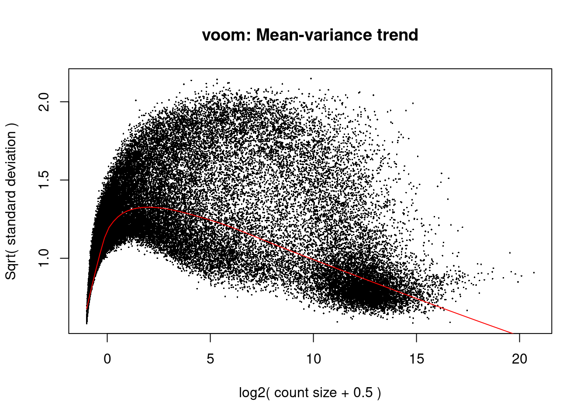

── Attaching core tidyverse packages ──────────────────────── tidyverse 2.0.0 ──
✔ dplyr 1.1.4 ✔ readr 2.1.5
✔ forcats 1.0.0 ✔ stringr 1.5.1
✔ lubridate 1.9.4 ✔ tibble 3.2.1
✔ purrr 1.0.4 ✔ tidyr 1.3.1
── Conflicts ────────────────────────────────────────── tidyverse_conflicts() ──
✖ dplyr::between() masks data.table::between()
✖ tidyr::extract() masks magrittr::extract()
✖ dplyr::filter() masks stats::filter()
✖ dplyr::first() masks data.table::first()
✖ lubridate::hour() masks data.table::hour()
✖ lubridate::isoweek() masks data.table::isoweek()
✖ dplyr::lag() masks stats::lag()
✖ dplyr::last() masks data.table::last()
✖ lubridate::mday() masks data.table::mday()
✖ lubridate::minute() masks data.table::minute()
✖ lubridate::month() masks data.table::month()
✖ lubridate::quarter() masks data.table::quarter()
✖ lubridate::second() masks data.table::second()
✖ purrr::set_names() masks magrittr::set_names()
✖ tidyr::spread() masks CePa::spread()
✖ purrr::transpose() masks data.table::transpose()
✖ lubridate::wday() masks data.table::wday()
✖ lubridate::week() masks data.table::week()
✖ lubridate::yday() masks data.table::yday()
✖ lubridate::year() masks data.table::year()
ℹ Use the conflicted package (<http://conflicted.r-lib.org/>) to force all conflicts to become errors
Registered S3 methods overwritten by 'treeio':
method from
MRCA.phylo tidytree
MRCA.treedata tidytree
Nnode.treedata tidytree
Ntip.treedata tidytree
ancestor.phylo tidytree
ancestor.treedata tidytree
child.phylo tidytree
child.treedata tidytree
full_join.phylo tidytree
full_join.treedata tidytree
groupClade.phylo tidytree
groupClade.treedata tidytree
groupOTU.phylo tidytree
groupOTU.treedata tidytree
is.rooted.treedata tidytree
nodeid.phylo tidytree
nodeid.treedata tidytree
nodelab.phylo tidytree
nodelab.treedata tidytree
offspring.phylo tidytree
offspring.treedata tidytree
parent.phylo tidytree
parent.treedata tidytree
root.treedata tidytree
rootnode.phylo tidytree
sibling.phylo tidytree
ReactomePA v1.42.0 For help: https://yulab-smu.top/biomedical-knowledge-mining-book/
If you use ReactomePA in published research, please cite:
Guangchuang Yu, Qing-Yu He. ReactomePA: an R/Bioconductor package for reactome pathway analysis and visualization. Molecular BioSystems 2016, 12(2):477-479
Loading required package: AnnotationDbi
Loading required package: stats4
Loading required package: BiocGenerics
Attaching package: 'BiocGenerics'
The following objects are masked from 'package:lubridate':
intersect, setdiff, union
The following objects are masked from 'package:dplyr':
combine, intersect, setdiff, union
The following object is masked from 'package:limma':
plotMA
The following objects are masked from 'package:stats':
IQR, mad, sd, var, xtabs
The following objects are masked from 'package:base':
anyDuplicated, aperm, append, as.data.frame, basename, cbind,
colnames, dirname, do.call, duplicated, eval, evalq, Filter, Find,
get, grep, grepl, intersect, is.unsorted, lapply, Map, mapply,
match, mget, order, paste, pmax, pmax.int, pmin, pmin.int,
Position, rank, rbind, Reduce, rownames, sapply, setdiff, sort,
table, tapply, union, unique, unsplit, which.max, which.min
Loading required package: Biobase
Welcome to Bioconductor
Vignettes contain introductory material; view with
'browseVignettes()'. To cite Bioconductor, see
'citation("Biobase")', and for packages 'citation("pkgname")'.
Loading required package: IRanges
Loading required package: S4Vectors
Attaching package: 'S4Vectors'
The following objects are masked from 'package:lubridate':
second, second<-
The following objects are masked from 'package:dplyr':
first, rename
The following object is masked from 'package:tidyr':
expand
The following objects are masked from 'package:data.table':
first, second
The following objects are masked from 'package:base':
expand.grid, I, unname
Attaching package: 'IRanges'
The following object is masked from 'package:lubridate':
%within%
The following objects are masked from 'package:dplyr':
collapse, desc, slice
The following object is masked from 'package:purrr':
reduce
The following object is masked from 'package:data.table':
shift
Attaching package: 'AnnotationDbi'
The following object is masked from 'package:dplyr':
select
Loading required package: BiasedUrn
Loading required package: geneLenDataBase
Attaching package: 'geneLenDataBase'
The following object is masked from 'package:S4Vectors':
unfactor
Attaching package: 'gplots'
The following object is masked from 'package:IRanges':
space
The following object is masked from 'package:S4Vectors':
space
The following object is masked from 'package:stats':
lowess
Attaching package: 'kableExtra'
The following object is masked from 'package:dplyr':
group_rows
Loading required package: usethis
Loading required package: viridisLiteSetup
Summary
- Loads and normalises gene expression data from the CCLE.
- Loads and processes drug response data from the GDSC.
- Filters these data to the relevant information for this project.
- Saves these objects as .rds files for later use.
Load packages
Load CCLE gene expression data
# Load Homo sapiens gene data (including Entrez ID's).
hs <- org.Hs.eg.db
# Load expression data from the CCLE, available here: https://depmap.org/portal/data_page/?tab=allData
CCLE <- read.gct("data/raw/CCLE_RNAseq_genes_counts_20180929.gct")
# Remove X's introduced by R for cell lines that start with a number, but not those that don't.
colnames(CCLE) <- sub("^X(\\d+)", "\\1", colnames(CCLE))
# Normalise CCLE counts using the limma voom method.
dge <- DGEList(counts = CCLE)
dge <- calcNormFactors(dge)
voom_dge <- voom(dge, plot = TRUE)
voom_CCLE <- voom_dge$E
# Tidy up the environment.
rm(list = c("dge", "voom_dge"))Load GDSC2 drug response data
# Load the GDSC dataset, current release available here: www.cancerrxgene.org/downloads/bulk_download
# Archived releases available via ftp: ftp.sanger.ac.uk/project/cancerrxgene/releases/
GDSC2 <- fread("data/raw/GDSC2_fitted_dose_response_25Feb20.csv", sep= ';')
# Load the GDSC dataset, current release available here: www.cancerrxgene.org/downloads/bulk_download
# Archived releases available via ftp: ftp.sanger.ac.uk/project/cancerrxgene/releases/
# GDSC2 <- read.xlsx("data/raw/GDSC2_fitted_dose_response_27Oct23.xlsx")
# Filter for cell lines that have data for the drug "Dasatinib".
dasatinib_GDSC2 <- filter(GDSC2, DRUG_NAME == "Dasatinib")Format data
# Standardize CCLE and GDSC2 cell line names, resolving a naming discrepancy between between cellosaurus cell lines www.cellosaurus.org/CVCL_3174 and www.cellosaurus.org/CVCL_1774.
# CCLE:
colnames(voom_CCLE)[colnames(voom_CCLE) == "TT_OESOPHAGUS"] <- "T-T_OESOPHAGUS"
# Isolate cell line and tissue labels for later indexing.
split_cell_line_tissues <- colnames(voom_CCLE) %>% strsplit(., "_")
colnames(voom_CCLE) <- strsplit(colnames(voom_CCLE), "_") %>%
lapply(., function(x) x[1]) %>%
unlist()
# GDSC2:
dasatinib_GDSC2$CELL_LINE_NAME <- ifelse(
dasatinib_GDSC2$CELL_LINE_NAME == "T-T", "T-T", # if
gsub("-", "", dasatinib_GDSC2$CELL_LINE_NAME, fixed = TRUE) # else
)
# Filter datasets for common cell lines.
common_lines <- intersect(dasatinib_GDSC2$CELL_LINE_NAME,colnames(voom_CCLE))
match_voom_CCLE <- match(common_lines, colnames(voom_CCLE))
common_voom_CCLE <- voom_CCLE[ , na.omit(match_voom_CCLE)]
match_dasatinib_GDSC2 <- match(common_lines, dasatinib_GDSC2$CELL_LINE_NAME)
common_dasatinib_GDSC2 <- dasatinib_GDSC2[na.omit(match_dasatinib_GDSC2),]
colnames(common_dasatinib_GDSC2)[5] <- "CCLE_Name"
# Tidy up the environment.
rm(list = c("common_lines", "match_voom_CCLE", "match_dasatinib_GDSC2"))Filter data
# Filter CCLE and GDSC2 data for BRCA and STAD cell lines with data for dasatinib.
# GDSC (also adds a column for CDH1 expression data):
sort_dasatinib_GDSC2 <- common_dasatinib_GDSC2 %>%
filter(TCGA_DESC %in% c("BRCA", "STAD")) %>%
filter(AUC < quantile(AUC, 0.33) | AUC > quantile(AUC, 0.66))
sort_dasatinib_GDSC2$CDH1 <- common_voom_CCLE %>% as.data.frame() %>%
dplyr::select(any_of(sort_dasatinib_GDSC2$CCLE_Name)) %>%
dplyr::slice(match("ENSG00000039068.14", rownames(.))) %>%
as.vector() %>%
t()Warning in set(x, j = name, value = value): 38 column matrix RHS of := will be
treated as one vector# CCLE:
sort_voom_CCLE <- common_voom_CCLE %>%
as.data.frame() %>%
dplyr::select(any_of(sort_dasatinib_GDSC2$CCLE_Name)) %>%
as.matrix()
# Tidy up the environment.
rm(list = c("common_voom_CCLE", "common_dasatinib_GDSC2"))Index cell lines to tissues
# Create a tool to find tissue type based on cell line name or vice versa.
tissue_tool <- data.frame(
Cell_Line = sapply(split_cell_line_tissues, `[[`, 1),
Tissue_Type = sapply(split_cell_line_tissues, function(x) paste(x[-1], collapse = "_")),
stringsAsFactors = FALSE)
tissue_tool <- tissue_tool %>% mutate(
Tissue_Type = Tissue_Type %>%
str_remove_all("c") %>%
str_replace_all("[[:punct:]]", "_"))
# Create another tool for the same purpose, but only including cell lines of interest.
sort_tissue_tool <- tissue_tool %>% filter(Tissue_Type %in% c("BREAST", "STOMACH"))
common_lines <- intersect(colnames(sort_voom_CCLE), sort_tissue_tool$Cell_Line)
sort_tissue_tool <- sort_tissue_tool %>%
filter(Cell_Line %in% common_lines) %>%
arrange(factor(Cell_Line, levels = common_lines))
# Tidy up the environment.
rm(list = c("split_cell_line_tissues", "common_lines"))
# Remove a cell line that causes problems: 2313287
# Remove column from sort_voom_CCLE
# sort_voom_CCLE <- sort_voom_CCLE[,!colnames(sort_voom_CCLE) %in% "2313287"]
# # Have to remove this from other objects
# sort_dasatinib_GDSC2 <- sort_dasatinib_GDSC2[sort_dasatinib_GDSC2$CCLE_Name != "2313287",]
# tissuetoolsort <- tissuetoolsort[tissuetoolsort$Cell_Line != "2313287",]Save pre-processed objects as .rds files
# GDSC2
saveRDS(GDSC2, file = "data/GDSC2.rds")
# dasatinib_GDSC2
saveRDS(dasatinib_GDSC2, file = "data/dasatinib_GDSC2.rds")
# sort_dasatinib_GDSC2
saveRDS(sort_dasatinib_GDSC2, file = "data/sort_dasatinib_GDSC2.rds")
# voom_CCLE
saveRDS(voom_CCLE, file = "data/voom_CCLE.rds")
# sort_voom_CCLE
saveRDS(sort_voom_CCLE, file = "data/sort_voom_CCLE.rds")
# tissue_tool
saveRDS(tissue_tool, file = "data/tissue_tool.rds")
# sort_tissue_tool
saveRDS(sort_tissue_tool, file = "data/sort_tissue_tool.rds")